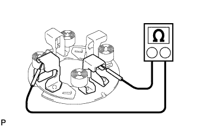
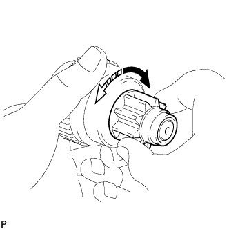

СТАРТЕР (для моделей мощностью 3,0 кВт) > ПРОВЕРКА |
| 1. ПРОВЕРЬТЕ СТАРТЕР |
Закрепите стартер в тисках между алюминиевыми пластинами.
Выполните испытание втягивания.
Отверните гайку и отсоедините вывод от контакта C.
| *1 | Контакт C |
Подсоедините аккумуляторную батарею к втягивающему реле стартера, как показано на рисунке. Затем убедитесь, что ведущая шестерня муфты смещается наружу.
| *1 | Контакт C |
| *2 | Контакт 50 |
Выполните испытание удержания.
Подсоедините аккумуляторную батарею, как описано выше. При условии, что ведущая шестерня муфты находится снаружи, отсоедините отрицательный (-) вывод от контакта C. Убедитесь, что ведущая шестерня остается снаружи.
| *1 | Контакт C |
Проверьте возврат ведущей шестерни муфты.
Отсоедините отрицательный вывод (-) от корпуса стартера. Убедитесь, что ведущая шестерня муфты возвращается внутрь.
Если ведущая шестерня муфты не перемещается внутрь, проверьте втягивающее реле стартера в сборе. Если втягивающее реле стартера не соответствует требованиям, замените его.
Выполните испытание работы без нагрузки.
Подсоедините вывод к контакту C и закрепите его гайкой.
Подсоедините аккумуляторную батарею и амперметр к стартеру, как показано на рисунке.
Убедитесь, что когда ведущая шестерня выдвинута, стартер вращается плавно и непрерывно. Затем измерьте ток.
| *1 | Контакт 50 |
| *2 | Контакт 30 |
| 2. ПРОВЕРЬТЕ ВТЯГИВАЮЩЕЕ РЕЛЕ СТАРТЕРА В СБОРЕ |
 |
Проверьте, нет ли обрыва в цепи втягивающей обмотки.
Измерьте сопротивление в соответствии со значениями, приведенными в таблице ниже.
| Контакты для подключения диагностического прибора | Состояние | Заданные условия |
| Контакт 50 - контакт C | Всегда | Менее 1 Ом |
| *1 | Контакт 50 |
| *2 | Контакт C |
Проверьте, нет ли обрыва в цепи удерживающей обмотки.
Измерьте сопротивление в соответствии со значениями, приведенными в таблице ниже.
| Контакты для подключения диагностического прибора | Состояние | Заданные условия |
| Контакт 50 - корпус реле стартера | Всегда | Менее 2 Ом |
| *1 | Контакт 50 |
| 3. ПРОВЕРЬТЕ ЩЕТКУ |
Измерьте длину щетки штангенциркулем.
| 4. ПРОВЕРЬТЕ ЩЕТКОДЕРЖАТЕЛЬ СТАРТЕРА В СБОРЕ |
|  |
Проверьте изоляцию щетки.
Измерьте сопротивление в соответствии со значениями, приведенными в таблице ниже.
| Контакты для подключения диагностического прибора | Состояние | Заданные условия |
| Положительный (+) щеткодержатель - отрицательный (-) щеткодержатель | Всегда | 10 кОм или более |
Снимите показание пружинного динамометра в момент отрыва щеточной пружины от щетки.
| 5. ПРОВЕРЬТЕ СТАТОР СТАРТЕРА В СБОРЕ |
 |
Проверьте, нет ли обрыва в катушке возбуждения.
Измерьте сопротивление в соответствии со значениями, приведенными в таблице ниже.
| Контакты для подключения диагностического прибора | Состояние | Заданные условия |
| Контакт C - щетка | Всегда | Менее 1 Ом |
Проверьте, нет ли замыкания обмотки возбуждения на массу.
Измерьте сопротивление в соответствии со значениями, приведенными в таблице ниже.
| Контакты для подключения диагностического прибора | Состояние | Заданные условия |
| Контакт C - корпус статора стартера | Всегда | 10 кОм или более |
| 6. ПРОВЕРЬТЕ ЯКОРЬ СТАРТЕРА В СБОРЕ |
Проверьте, нет ли на поверхности коллектора загрязнений и/или следов подгорания.
При наличии на поверхности загрязнений или следов подгорания удалите их наждачной бумагой (№ 400) или на токарном станке. При необходимости замените якорь стартера в сборе.
Проверьте коллектор на обрыв цепи.
Измерьте сопротивление в соответствии со значениями, приведенными в таблице ниже.
| Контакты для подключения диагностического прибора | Состояние | Заданные условия |
| Сегмент - сегмент | Всегда | Менее 1 Ом |
| *1 | Сегмент |
Проверьте коллектор на короткое замыкание.
Измерьте сопротивление в соответствии со значениями, приведенными в таблице ниже.
| Контакты для подключения диагностического прибора | Состояние | Заданные условия |
| Сегмент - сердечник | Всегда | 10 кОм или более |
| *1 | Сердечник |
| *2 | Сегмент |
Проверьте радиальное биение коллектора.
Установите якорь на V-образные призмы.
Измерьте радиальное биение индикатором часового типа.
Измерьте диаметр коллектора штангенциркулем.
 |
С помощью штангенциркуля измерьте глубину канавок коллектора.
Проверьте подшипники.
Убедитесь, что подшипники вращаются плавно.
Если результат не соответствует заданному, замените якорь стартера в сборе.
| 7. ПРОВЕРЬТЕ ПУСКОВУЮ МУФТУ |
|  |
Поверните ведущую шестерню по часовой стрелке и проверьте, плавно ли она вращается. Попытайтесь повернуть ведущую шестерню против часовой стрелки и убедитесь, что она блокируется.
 | Разблокировано |
 | Заблокировано |
Вручную проверните ведущую шестерню, нажимая на нее, и проверьте перемещение подшипника.
Если результат не соответствует заданному, замените щеткодержатель стартера в сборе.